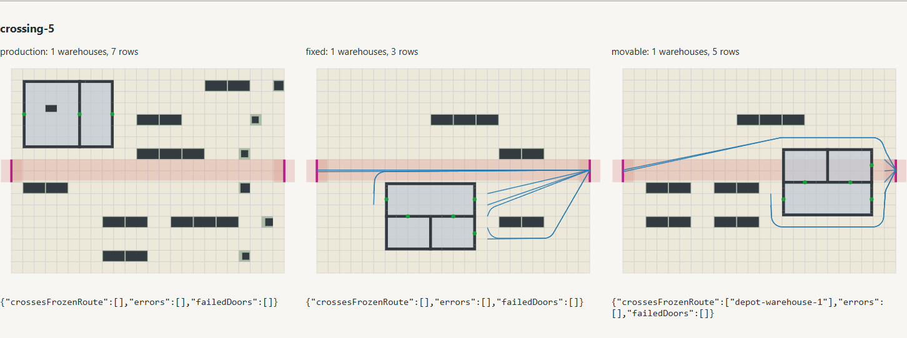
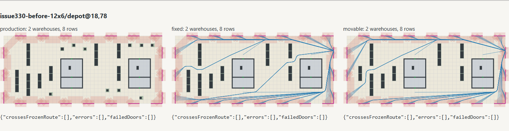
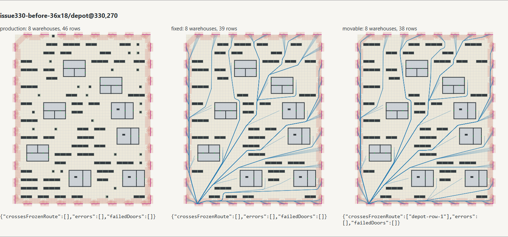

Production stays unchanged. Fixed/movable experiments share additional exterior bypass/doorstep rules and omit secondary crate infill. Movable admits useful warehouse parcels in isolated crossings; authored samples gain three rows and no additional warehouses. Cost and limitations: README. Full eighteen-workload collision preview is retained as compressed HTML; exact geometry and checks are in results.json.gz.
| Workload | Production warehouses/rows | Fixed warehouses/rows | Movable warehouses/rows |
|---|---|---|---|
| crossing-1 | 1/8 | 1/4 | 1/4 |
| crossing-2 | 1/6 | 1/2 | 1/2 |
| crossing-3 | 1/6 | 0/4 | 1/3 |
| crossing-4 | 1/7 | 0/6 | 1/3 |
| crossing-5 | 1/7 | 1/3 | 1/5 |
| crossing-6 | 1/7 | 0/6 | 1/6 |
| issue330-before-12x6/depot@18,78 | 2/8 | 2/8 | 2/8 |
| issue330-before-12x6/depot@156,120 | 5/24 | 5/24 | 5/25 |
| issue330-before-24x12/depot@318,30 | 2/6 | 2/6 | 2/6 |
| issue330-before-24x12/depot@234,72 | 5/36 | 5/30 | 5/30 |
| issue330-before-24x12/depot@414,90 | 2/10 | 2/10 | 2/10 |
| issue330-before-24x12/depot@450,216 | 2/6 | 2/6 | 2/6 |
| issue330-before-24x12/depot@312,264 | 2/7 | 2/7 | 2/8 |
| issue330-before-36x18/depot@474,60 | 5/28 | 5/28 | 5/28 |
| issue330-before-36x18/depot@330,270 | 8/46 | 8/39 | 8/38 |
| issue330-before-36x18/depot@768,270 | 8/47 | 8/29 | 8/29 |
| issue330-before-36x18/depot@696,372 | 8/38 | 8/34 | 8/31 |
| issue330-before-36x18/depot@804,372 | 8/52 | 8/40 | 8/45 |


